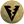
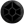
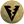
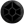

Introdução
Os membros do clã Orebound dedicam suas vidas para lidar com os mais fortes Pokémon do tipo  Ground e  Rock para derrotar qualquer oponente que encontrarem.
Os membros do clã Orebound dedicam suas vidas para lidar com os mais fortes Pokémon do tipo  Ground e  Rock para derrotar qualquer oponente que encontrarem.
Acesse a página de Tasks do clã Orebound para conferir os requisitos necessários em cada um dos Rankings.
O bônus máximo do clã é aplicado ao completar as tarefas do Rank 5. Abaixo estão as porcentagens de bônus adquiridas:
Rock: Atk 25%, Def 25%
Ground: Atk 25%, Def 25%
Tier é uma classificação comum entre os Pokémon, indicando não apenas a raridade deste dentro do jogo, mas também qual executará melhor uma função, contanto que a comparação seja realizada entre dois Pokémon de mesma função. O Tier e a Função de um Pokémon pode ser conferido na Pokédex (Atalho Shift + D). Caso deseje ler mais sobre, acesse a página Tier e Funções ou Tiers (listagem) para conferir a listagem de Tier de todos os Pokémon.
Para facilitar a leitura desta página, a tabela a seguir contém a legenda de todas as Funções, PvP e PvE disponíveis no jogo.

Abaixo estão listados todos os Pokémon do clã Orebound e suas respectivas funções, separados por Tier.

Observação: O Pokémon Golden Sudowoodo é considerado tanto PvP como PvE.

Observação: O Pokémon Shiny Pupitar é considerado tanto PvP como PvE.


*Observação: Apesar de receber o bônus de clã Orebound, os Pokémon Mega Garchomp e Golden Steelix não entram na contagem de Pokémon deste clã, por terem seu uso exclusivo em outros clãs no PvP.
**Observação: Os Pokémon Alolan Golem, Shiny Marowak, Mega Tyranitar e Shiny Torterra são considerados tanto PvP como PvE.
***Observação: Por decisão da Equipe de Balanceamento, o Crystal Onix faz parte também do Clã Orebound, mesmo que não possua o bônus de defesa.

Observação: Os Pokémon T1H tem força de T1C fora da Nightmare World e são acima dos T1C dentro dela ou pelo menos tem um diferencial perante os demais Pokémon. São balanceados exclusivamente para conteúdos PvE e não podem ser utilizados em duelos PvP.


*Observação: Apesar de receber o bônus de clã Orebound, os Pokémon Carracosta e Wormadam Ground não entram na contagem de Pokémon deste clã, por terem seu uso exclusivo em outros clãs no PvP.


Rotação Mid-Late Game: Shiny Golem (Offensive Tanker), Omastar (Offensive Tanker), Rampardos (Burst Damage Dealer), Golem (Burst Damage Dealer), Solrock (Burst Damage Dealer), Shiny Rampardos (Burst Damage Dealer)

Rotação Mid-Late Game: Steelix (Offensive Tanker), Rhydon (Burst Damage Dealer), Hippowdon (Burst Damage Dealer), Shiny Donphan (Burst Damage Dealer), Nidoqueen (Burst Damage Dealer), Alolan Dugtrio (Burst Damage Dealer)

Observação: A exclusividade é aplicada apenas em conteúdos PvP. No PvE, o uso é liberado para todos os clãs.
Para obter um Shiny Golem, fale com a NPC Illyana, localizada na área do Clã Orebound, no Trade Center.

Para obter um Shiny Donphan, fale com a NPC Illyana, na área de Orebound, na resistência de Cerulean.

Abaixo são apresentadas as efetividades dos Pokémon deste clã, considerando apenas aqueles que possuem um elemento. A efetividade pode mudar caso o Pokémon possua dois elementos ou possua alguma resistência à algum elemento, como é o caso do Cradily, que possui a passiva Storm Drain, permitindo que ganhe resistência contra ataques do tipo Water (0,5x).
A efetividade de um Pokémon pode ser conferida na PokedexIcon.png Pokédex ou realizando uma busca na página Pokémon (uso do Ctrl+F recomendado). Clique no ícone do elemento desejado para conferir a tabela de efetividade deste clã.
Rock Ground
Pagina Principal